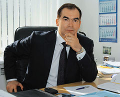
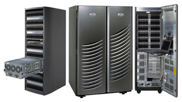
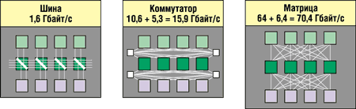

|  | О ситуации на рынке систем хранения данных, истории систем EMC Symmetrix в России, особенностях их внедрений, перспективах массивов Symmetrix в беседе с главным редактором "BYTE/Россия" Андреем Борзенко рассказывает Леонид Винокуров, руководитель Департамента информационных технологий компании "ТехноСерв А/С". |
"BYTE/Россия": Как Вы оцениваете состояние и перспективы рынка систем хранения данных?
Леонид Винокуров: Мировая индустрия систем хранения переживает сегодня не лучшие времена. Впрочем, очевидно, что проблемы сектора ИТ, связанного с хранением данных, не специфичны, а спровоцированы общим ухудшением мировой экономической ситуации и сокращением расходов на информационные технологии.
Ряд аналитиков утверждает, учитывая незаменимость систем хранения данных для бизнеса, что этот сектор вновь возобновит рост, хотя и не столь впечатляющий, как ранее. Более того, отложенный спрос, связанный с сокращением расходов компаний на системы хранения и их стремлением "выжать" максимум из уже установленного оборудования, окажет в перспективе дополнительное положительное воздействие на рост рынка.
Ситуация на российском рынке систем хранения еще более оптимистична. Мировой кризис ИТ-отрасли почти не затронул российский рынок, последние годы он демонстрирует небольшой, но устойчивый рост. А в силу преобладания в структуре ИТ-бюджетов российских предприятий затрат на аппаратное обеспечение рынок систем хранения оказался одним из самых перспективных направлений. По последним прогнозам IDC, насколько я помню, его рост составит около 15% в год.
Если говорить о секторе дисковых систем high-end, то традиционно сильные позиции на нем занимает компания EMC (http://www.emc.com). В последние годы острая конкурентная борьба, появление нескольких новых интересных продуктов, жесткие ценовые войны привели к тому, что позиция EMC как лидера в этом секторе стала небесспорной. Уверен, что такая ситуация - не навсегда, тем более что в России Symmetrix продается вполне успешно. Наша компания в 2002 г. продала 26 дисковых массивов Symmetrix, а с начала 2003 года - уже 19.
"BYTE/Россия": Система high-end для Вас - это...
Л. В.: Для меня система хранения уровня high-end ассоциируется в первую очередь с дисковым массивом Symmetrix компании EMC.
В последнее десятилетие Symmetrix - это самый стабильный и яркий брэнд на рынке дисковых массивов, с которым отождествляется представление о самых мощных и надежных системах хранения данных и с которым сравнивают решения других производителей. И тому есть множество объективных причин. Это исключительно высокие технические показатели надежности и производительности. Это гарантированная совместимость практически со всеми серверными платформами и операционными системами. Это уровень масштабируемости и гибкости конфигураций, недоступный никакому другому массиву в мире. Это признанный статус компании EMC как одного из "китов", на которых держится сегмент ИТ, связанный с хранением данных, его основоположника, концентратора знаний и опыта. Это заслуживающая уважения политика компании EMC, связанная с поддержкой преемственности в развитии семейства Symmetrix.
Но главное принципиальное преимущество Symmetrix я вижу в его интеллектуальности, т. е. в функциональности поставляемых вместе с ним программных технологий. С самого появления и на всех этапах последующей эволюции дисковый массив Symmetrix рассматривался разработчиками не как набор дисков, обеспечивающий хранение данных, но прежде всего как комплекс, управляющий этими данными, - начиная с мониторинга дискового пространства и заканчивая обеспечением постоянной готовности, непрерывного доступа к данным, защиты от сбоев и катастроф. Эта стратегия компании EMC на развитие интеллектуальности систем хранения данных во многом определила успех Symmetrix на мировом и на российском рынках.
"BYTE/Россия": С компанией "ТехноСерв А/С" связаны первые поставки Symmetrix в России. Расскажите, как это было.
Л. В.: Впервые Symmetrix появился в России в 1995 г. - наша компания представила его на выставке "Комтек-95".
Давайте вспомним, что происходило на российском компьютерном рынке в середине 90-х годов. С одной стороны - завершение выпуска серии ЕС ЭВМ, на базе которых было построено большинство крупных корпоративных систем того времени, и трудности миграции приложений такого класса на серверы открытых систем из-за недостатка квалифицированных специалистов, отсутствия у Unix-систем достаточной производительности для мультипользовательской распределенной работы, наконец, из-за трудоемкости перевода ПО. C другой стороны - улучшение общей экономической ситуации в стране, стремительное расширение спектра решаемых информационными системами задач, колоссальная потребность в модернизации вычислительной инфраструктуры и, главное, готовность крупных корпоративных заказчиков инвестировать в информационные технологии мирового уровня.
В части систем хранения данных технологическое превосходство EMC над конкурентами было неоспоримо и по емкости, и по надежности, и по экономичности в эксплуатации. Например, емкость весьма популярных тогда устройств хранения HDS 7880 c полной комплектацией дисковых стоек составляла 104 Гбайт, при этом весь массив занимал площадь 500-600 м2, в то время как самая младшая модель в семействе Symmetrix обеспечивала 136 Гбайт дискового пространства, имея установочную площадь всего 6 м2.
Эти факторы объясняют то, почему наша компания вышла на рынок storage-решений - абсолютно новый и для "ТехноСерв А/С", и для других российских компаний-интеграторов, почему в работе на этом рынке мы сделали ставку на продукты EMC, а также почему освоение этого рынка было столь успешным.
В декабре 1995 г. было заключено партнерское соглашение между EMC и "ТехноCерв А/С", в соответствии с которым наша компания получила статус Direct Value Added Reseller. Кстати сказать, и сегодня "ТехноCерв А/С" остается единственным из российских компаний прямым партнером EMC. Уже в феврале 1996 г. была осуществлена первая поставка Symmetrix 5100 в ГВЦ МПС России, а всего в течение 1996-1997 гг. в рамках различных проектов для российских заказчиков было поставлено 28 устройств общей емкостью 2,5 Тбайт.
"BYTE/Россия": Какого рода доводы Вам приходится приводить клиентам, убеждая их перейти на Symmetrix?
Л. В.: Конечно, технологическая красота решения - очень сильный аргумент, но все-таки решающий фактор при покупке любого ИТ-решения, в том числе и системы хранения, - экономическая целесообразность. Именно доводы экономического характера были самыми "убойными". Причем в разные годы мы приводили разные доводы, и они по-разному воспринимались нашими заказчиками.
Вообще, оглядываясь назад, в деятельности нашей компании по продвижению Symmetrix на российском рынке можно выделить (весьма условно) несколько этапов.
На первом этапе, о котором я уже упоминал, Symmetrix поставлялся в качестве устройств хранения для серверов класса мэйнфрейм. На этом этапе основные доводы были таковы: инвестиции компенсируются низкими эксплуатационными расходами и нескорым моральным устареванием решения. Действительно, все Symmetrix, поставленные в проектах 1996-1997 гг., до сих пор полностью исправны и активно эксплуатируются, в том числе и самый первый, сменивший, правда, хозяина.
Следующий этап, начало которого относится к 1997 г., связан со стремительным ростом объемов обрабатываемых данных и широким использованием в проектах серверов открытых систем. Ключевые задачи этого этапа - сокращение издержек на хранение данных и упрощение обслуживания. И Symmetrix становится прекрасным решением таких задач, обеспечивая консолидированное и централизованное хранение корпоративных данных в ставшей стандартом де-факто гетерогенной информационной среде.
И, наконец, текущий этап, который характеризуется возросшим интересом крупных российских предприятий и организаций к решениям, связанным с обеспечением непрерывности бизнеса. Речь теперь идет не столько о снижении затрат, сколько о повышении надежности информационной системы, убытки из-за временной недоступности которой могут достигать весьма значительных сумм. Имеющиеся в Symmetrix функциональные возможности зеркалирования данных и обеспечения безостановочности функционирования приложений позволяют применять его в качестве основы сложных отказо- и катастрофоустойчивых комплексов.
"BYTE/Россия": На какие категории заказчиков и на какие отрасли вы ориентируетесь?
Л. В.: Решения на базе Symmetrix ориентированы на крупные информационные системы, в которых стоит задача накопления данных и управления ими. Потребность в таком решении на предприятии может быть связана с появлением нескольких серверов, разворачиванием гетерогенной среды, достижением некоего порогового значения (по нашим оценкам, 1 Тбайт) объема оперативных данных, быстрым ростом объемов обрабатываемых данных, ужесточением требований к безостановочности работы приложений и многими другими факторами.
Такие решения очень часто привязываются к конкретным вертикальным рынкам. Подобных вертикалей в России можно насчитать несколько. Из коммерческих - телекоммуникации, транспорт, банковский сектор, промышленность, в том числе нефте- и газодобывающая. Очень важная вертикаль - и я считаю, что Symmetrix идеально соответствует ее требованиям, - это государственный сектор. Любые программы, разработки, системы, которые строятся в масштабах всей страны, - сфера приложения возможностей Symmetrix, потому что это решение наилучшим образом приспособлено для хранения громадных объемов информации и управления ими.
Если говорить в общем, то проекты "ТехноСерв А/С" с применением дисковых массивов Symmetrix можно считать индикатором того, как развивался российский рынок. Первые проекты "ТехноСерв А/С" реализовала для промышленных предприятий и организаций железнодорожного транспорта. Затем в числе наших заказчиков появились организации банковской сферы, телекоммуникационные компании, предприятия нефтяной отрасли. По этим проектам в принципе можно проследить историю развития российского бизнеса. Сегодня мы работаем с разными отраслями, и могу сказать, что их становится все больше.
"BYTE/Россия": Как сегодня выглядит стандартное решение на базе Symmetrix?
Л. В.: На мой взгляд, стандартных решений на базе массивов уровня high-end не существует. Каждая конкретная конфигурация Symmetrix тщательно проектируется исходя из общей архитектуры вычислительной инфраструктуры заказчика, класса решаемых в информационной системе задач, требований к функционированию приложений и других факторов. Разнообразие интеллектуальных возможностей Symmetrix делает каждый проект на его базе уникальным. Можно говорить лишь о каких-то типовых параметрах решений.
По объемам это не менее 2 Тбайт дисковых ресурсов, что в несколько раз меньше, чем на Западе, но если вспомнить, что емкость устройств в первых поставках не превышала нескольких сотен гигабайт, то видно, что масштабы российских ИТ-проектов растут очень быстро. Сегодня емкость некоторых массивов Symmetrix, установленных у наших заказчиков, после ряда модернизаций достигает 10 Тбайт.
По параметру подключения серверов открытых систем это несколько серверов, объединенных сетью хранения данных SAN с одним или двумя массивами, оснащенными многопортовыми оптическими контроллерами. Для серверов класса мэйнфрейм это два сервера IBM S/390 или zSeries, подключенные к нескольким массивам Symmetrix через ESCON-директоры. Хотя Symmetrix с 2001 г. обеспечивает подключение серверов этого класса и по FICON, в нашей практике первая поставка массива Symmetrix в такой конфигурации имела место лишь в нынешнем году.
С каждым устройством Symmetrix поставляется пакет программных технологий, в состав которого включается различное функциональное ПО ЕМС, обеспечивающее защиту, совместное использование данных и управление ими. Обязательный компонент поставки - программная технология управления технологиями и ресурсами EMC Control Center.
"BYTE/Россия": Есть ли какие-то "национальные особенности" решений на базе Symmetrix в России?
Л. В.: Технологии в принципе во всем мире одинаковы, и Symmetrix - не исключение. Устройства Symmetrix, установленные в России, так же, как и во всем мире, хранят огромные объемы данных, работают в гетерогенной среде с мощными серверными платформами, поддерживают функционирование самых разных приложений - ERP, биллинг, OLTP, OLAP, электронный документооборот и т. д.
Если какие-то особенности и есть, то они лежат скорее в области психологии, чем технологии. Например, решения ЕMC включают новейшие методы диагностики, которые позволяют осуществлять непрерывный удаленный мониторинг работы систем Symmetrix и по специальным каналам связи передавать сообщения в диспетчерский центр ЕMC о той или иной неисправности системы. Таким образом реализуется программа расширенной поддержки заказчиков ЕMC - круглосуточное отслеживание статуса работы Symmetrix и оперативное устранение ошибок и сбоев. Но, как показывает наш опыт, российские заказчики, несмотря на несомненные преимущества удаленного администрирования, относятся к нему крайне негативно. Хотя о некоторых позитивных сдвигах все же можно говорить. Очень часто для технической поддержки Symmetrix мы используем некую компромиссную схему - когда заказчик в заранее оговоренный момент и на определенное время открывает порты на Symmetrix, и специалисты "ТехноСерв А/С" получают возможность удаленно провести какие-то плановые или внеплановые работы по администрированию системы.
Нельзя не отметить и такую общеизвестную особенность отечественных предприятий, как крайне осторожное инвестирование в информационные системы. И очень часто одно из главных требований к проекту - минимальный бюджет обеспечивается за счет того, что из проектных решений исключаются программные технологии EMC. В западных компаниях Symmetrix в проектах используется не просто как хранилище на несколько терабайт, а как сложный программно-аппаратный комплекс, позволяющий эффективно эти терабайты использовать. Российские заказчики видят прежде всего терабайты, а проблемы эффективного управления данными решаются очень часто не при помощи соответствующего ПО, а за счет "пота и крови" системных администраторов. Так что программные технологии покупают очень неохотно, только самые необходимые.
Впрочем, нельзя не признать, что некоторые особенности российских конфигураций решений на базе Symmetrix обусловлены вполне объективными причинами. Один из самых наглядных примеров - использование такой популярнейшей во всем мире программной технологии ЕМС, как удаленное зеркалирование SRDF, которое служит основой при построении резервных центров. В отличие от США или Западной Европы, где есть мощные магистрали и сети, Россия с ее огромными расстояниями развитой сетевой инфраструктурой похвастаться не может. Вероятно, поэтому инсталляции SRDF, подавляющее большинство которых находится в Москве, выполнены либо в пределах одной производственной площадки, либо по схеме "два здания в городе" или "центральный офис в городе - резервный офис в ближайшем Подмосковье". Таких красивых географически распределенных проектов, как резервные центры, расположенные на восточном и западном побережьях США или даже на разных континентах, в России пока нет.
Еще один пример - невысокий интерес российских заказчиков к развертыванию решений на основе NAS (Network Attached Storage). Архитектура NAS изначально пришла из мира Unix и получила на Западе довольно широкое распространение в конце 80-х - начале 90-х. У нас же Unix-мир в то время еще не сформировался, и решения по совместному использованию файлов реализовывались в основном на платформе Novell. Вот почему в нашей стране очень трудно объяснять заказчикам достоинства NAS, эту архитектуру часто просто не воспринимают всерьез. EMC Celerra, решение EMC в архитектуре NAS, появилось еще в 1997 г., но до сих пор в России нет ни одной инсталляции. А вот архитектура сетей хранения SAN (Storage Area Network) сейчас заметно более популярнае. Хотя в портфеле предложений EMC она появилась позднее, чем NAS, - в 1998 г., первый проект на ее основе в России был реализован уже в начале 1999 г. И сегодня российские ИТ-специалисты отдают ей предпочтение, подавляющее большинство проектов, реализуемых "ТехноСерв А/C", строится на основе топологии SAN.
Примечательно, что в других странах архитектура NAS очень популярна. NAS-решения занимают около 10% рынка систем хранения данных, и, по прогнозу аналитиков, в перспективе их рыночная доля увеличится до 15%.
"BYTE/Россия": Что потребовалось от "ТехноСерв А/С", чтобы успешно продавать, внедрять и обслуживать решения на базе Symmetrix?
Л. В.: Абсолютно все проекты на базе Symmetrix - это сверхсложные проекты для очень серьезных корпоративных заказчиков. Очевидно, что реализация таких проектов невозможна без наличия у системного интегратора соответствующей инфраструктуры.
"ТехноСерв А/С" имеет собственную транспортную службу, напрямую доставляющую оборудование из Европы, содержит крупнейший в Европе склад, номенклатура которого насчитывает 400 позиций запасных частей для всех моделей дисковых массивов Symmetrix, когда либо поставлявшихся нашей компанией. Причем по мере продаж систем хранения склад пополняется - если заказчик приобретает расширенные гарантии, например, на фиксированное время ремонта оборудования, под обеспечение этих гарантий необходимые запчасти закупаются, проходят таможенную очистку и поступают на склад.
Серьезнейшее внимание мы уделяем работе Демонстрационного центра "ТехноСерв А/С" - он действует с 1997 г., и в нем установлено шесть дисковых массивов Symmetrix разных моделей. При продвижении решений корпоративного уровня очень важно не только рассказывать заказчикам о новинках в области ИТ, но и показывать их на реально работающих макетах. Кроме того, в Демонстрационном центре при необходимости можно провести предварительное тестирование конкретной конфигурации. Нередко без этого заказчики просто не принимают решения о покупке.
Но основные наши инвестиции были сделаны в подготовку специалистов, и жизнь показала, что это самые эффективные инвестиции. Нам удалось организовать обучение двух специалистов в учебных центрах EMC еще в 1995 г., до начала широких продаж, что позволило обеспечить их полноценной экспертизой и технической поддержкой. Сегодня в компании работает девять инженеров - сертифицированных специалистов ЕМС, которые проходят ежегодную стажировку или тренинги в учебных центрах производителя. И, конечно же, мы приветствуем их сертификацию другими компаниями, например, Sun Microsystems, Hewlett-Packard, Veritas, Oracle, поскольку запуск и обслуживание Symmetrix подразумевает знание всех узлов современной гетерогенной сети.
Хочу подчеркнуть, что, говоря о специалистах, я имею в виду не только инженеров, которые запускают оборудование, настраивают программное обеспечение, осуществляют сервис, но проектировщиков, которые осуществляют всю предпродажную поддержку решений - от аудита и оценки рисков до разработки процедур эксплуатации и составления программы тренинга персонала.
"BYTE/Россия": И последний, традиционный, вопрос о Ваших оценках перспектив Symmetrix.
Л. В.: Перспективы Symmetrix я связываю прежде всего с новым семейством Symmetrix DMX, которое компания EMC представила 3 февраля 2003 г. (характеристики моделей этого семейства приведены в таблице). Запуск линейки DMX - событие далеко не рядовое как для самой EMC, так и для индустрии систем хранения в целом. Архитектурные, аппаратные, программные, диагностические и сервисные новшества, реализованные в DMX, позволяют говорить о появлении систем хранения данных нового поколения.
|  | Семейство Symmetrix DMX.
|
Технические характеристики моделей семейства Symmetrix DMX
| DMX 800 | DMX 1000 | DMX 1000-P | DMX 2000 | DMX 2000-P | |
| Конструктив | Модульный | Монолитный | Монолитный | Монолитный | Монолитный |
| Максимальное число дисков | 120 | 144 | 144 | 288 | 288 |
| Общая емкость, Тбайт | 17,5 | 21 | 21 | 42 | 42 |
| Полезная емкость, Тбайт | 15,3 (контроль четности) | 18,4 (контроль четности) | 10,5 (зеркальное копирование) | 36,8 (контроль четности) | 21 (зеркальное копирование) |
| Максимальная емкость кэш-памяти, Гбайт | 32 | 64 | 64 | 128 | 128 |
| Число портов: ESCON Fibre Channel 2 Гбит/с FICON 2 Гбит/с |
- 16 - |
48 48 24 |
32 32 16 |
96 48 48 |
64 64 32 |
Качественно новым архитектурным решением в устройствах Symmetrix DMX стало применение матрицы вместо шины или коммутатора для организации информационных связей между внутренними элементами (межсоединений). На этом можно и нужно остановиться особо.
Системы Symmetrix DMX основаны на архитектуре межсоединений, названной матрицей прямых соединений (отсюда и название семейства - Direct MatriХ аrchitecture, DMX), которая использует до 128 соединений "точка-точка" между кэш-памятью, внешними и внутренними контроллерами. Благодаря этому не только устраняются узкие места, присущие шинной архитектуре предыдущих моделей Symmetrix, но и достигается значительное превосходство по производительности в сравнении с решениями на основе коммутации (см. схему).
|  |
| Эволюция архитектуры межсоединений.
|
Эта архитектура действительно революционна, она в корне отличается от архитектур систем хранения, представленных сегодня на рынке. По оценкам экспертов, Symmetrix DMX - это архитектура систем хранения на следующие 10 лет, а компания EMC опережает любых ближайших конкурентов в данной отрасли по крайней мере на 18 месяцев.
Особенно перспективно в новом семействе устройство DMX 800, попадающее в средний ценовой диапазон. Эта модель взяла лучшее от двух миров: модульность от более дешевых моделей и прекрасные эксплуатационные параметры от монолитных систем. В этом отношении система DMX 800 уникальна. Думаю, что с помощью этого продукта мы значительно расширим пул заказчиков за счет освоения новых, более низких ценовых сегментов рынка.
Все это дает нам право с оптимизмом смотреть в будущее и надеяться на то, что Symmetrix DMX будут в России востребованы. Кстати говоря, один проект на основе устройства повышенной производительности Symmetrix DMX 1000-Р "ТехноСерв А/С" уже реализовала.